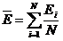

Гидроакустический метод количественной оценки водных биомасс базируется на следующем наборе допущений,
параметров и методов их идентификации:
Состояние акустического поля в упругой водной среде описывается зависимостью давления от координат места и времени в
виде дифференциального уравнения в частных производных:
где:
p - давление звука в точке (x, y, z) в момент времени t,
c - скорость звука.
Использование приведенного строгого уравнения и расчеты по нему затруднены недостаточностью информации о фактических
параметрах среды.
На практике, по аналогии с геометрической оптикой, для описания состояния поля в точках пространства
и времени, используются методы лучевой акустики, подразумевающие игнорирование информации о фазе акустической волны,
значительное превышение размеров рассеивателей над длиной акустической волны и отсутствие значимых изменений
характеристик среды на длине волны.
Гидроакустический метод оценки водных биомасс является вариантом обратной задачи рассеяния.
Общая теория обратной задачи рассеяния описывает эхосигнал исключительно как совместный результат отражательной
способности цели, её нахождения в пространстве и потерь звука на распространение. Имея информацию только в виде
принятой звуковой волны с известной интенсивностью (давлением), эта задача не имеет однозначного решения, так как,
одна и та же форма эхосигнала может быть образована разными составами рассеивателей.
Определение плотности зарегистрированных объектов, как решение обратной задачи рассеяния в гидроакустическом методе
количественной оценки водных биомасс, всегда требует дополнительной информации о зарегистрированных рассеивателях.
Для учета потерь интенсивности звуковой волны при её распространении применяется модель сферической волны с учетом
фактора затухания.
На относительно небольших дистанциях, на которых происходит гидроакустическая оценка водных
биомасс, и при недостаточности знаний о специфических условиях распространения звука в конкретных обстоятельствах,
считается вполне допустимым учет потерь на распространение и затухание ультразвука в воде для сферического фронта
распространяющейся волны по формуле:
где:
ПР - потери интенсивности распространяющейся звуковой волны;
R - пройденное волной расстояние, м;
a - коэффициент затухания, дБ/м.
В промысловой гидроакустике потери интенсивности эхосигнала от одиночных целей определяются по формуле:
А для групповых целей по формуле:
Селекция эхосигналов от одиночных и групповых целей производится по критерию соответствия длительности эхосигнала
и длительности генерируемой посылки эхолота.
Распределение вероятностей амплитуд зарегистрированных одиночных эхосигналов есть результат свертки вероятностей:
где:
we(y) - плотность распределения вероятностей амплитуд зарегистрированных одиночных сигналов;
wt(x) - плотность распределение вероятностей регистрации цели под определенным углом обнаружения;
wf(y - x) - искомая плотность распределения вероятностей отражательной способности одиночных целей.
В численном решении приведенного выражения используется кусочно-линейная аппроксимации функции распределения
амплитуд и характеристики направленности применяемой антенны.
Зависимость энергии эхосигнала от плотности рассеивателей линейна при условии случайного распределения
рассеивателей в озвученном объеме:
где:
E - средняя энергия эхосигнала;
n - число рассеивателей в озвученном объеме;
e - средняя энергия эхосигнала от единичного рассеивателя.
Линейная зависимость применима только при выполнении условий релеевского рассеяния в озвученном объеме,
при котором функция распределения вероятностей значений интенсивности определена выражением:
где:
I - математическое ожидание интенсивности эхосигнала.
Напряжение на клеммах гидроакустического преобразователя прямо пропорционально звуковому давлению падающей волны.
Энергия эхосигнала прямо пропорциональна интенсивности эхосигнала, или квадрату его среднеквадратичного давления,
или квадрату напряжения на клеммах антенны, мерой энергии эхосигнала служит интеграл вида:
Физический смысл пределов интегрирования – верхний и нижний границы слоя интегрирования, причем нижняя граница слоя
может быть переменной от посылки к посылки эхолота и определяется положением дна.
На практике, указанный интеграл накапливается за ряд циклов прием – передача (посылок эхолота) и его среднее значение
определяется формулой:

где:
E - интеграл эхосигнала по формуле выше;
N - число посылок эхолота.
Тогда для плотности рассеивателей, образующих интегрируемый эхосигнал, справедливо следующее выражение, известное
как уравнение интегрирования:
где:
p - средняя плотность рассеивателей в интервале накопления;
C - калибровочная постоянная, зависящая от чувствительности акустического преобразователя и сквозного
усиления аналоговых трактов эхолота и интегратора;
g - ошибка компенсации потерь интенсивности на распространение и затухание звука при его распространении;
E - среднее накопление интеграла по формуле выше;
d - среднее значение сечения обратного рассеяния объектов, образующих интегрируемый сигнал;
F - интегральный фактор направленности антенны, идеализированное представление характеристики
направленности в виде телесного угла, в пределах которого, интегрирование эхосигнала даст тот же результат, что и в
пределах реальной пространственной характеристики направленности, при условии случайного распределения
рассеивателей в озвученном объеме:
где:
a и f - азимутальный и орбитарный углы;
F - интегральный фактор направленности, стерадиан.
Восстановление распределения отражательной способности зарегистрированных одиночных целей производится непрямым
модифицированным методом Крейга-Форбса с использование кусочно-линейных аппроксимаций входного распределения
амплитуд, характеристики направленности антенны и искомого распределения отражательной способности.
Полученное решение используется для определения искомой плотности через представление формулы интегрирования 7 в виде:
где:
p - средняя, в интервале усреднения, плотность оцениваемых объектов;
SA - средняя, в интервале усреднения, сила поверхностного обратного рассеяния;
TS - средняя, в интервале усреднения, сила цели объектов оцениваемого скопления.
Средняя, в интервале усреднения, сила поверхностного обратного рассеяния определяется по формуле:
где:
E - среднее, в интервале усреднения, накопление интегратора по формуле 7;
Cea - электроакустическая постоянная системы, параметр модели, определяется специализированной
гидроакустической калибровкой по эталонной цели;
F - интегральный фактор направленности антенны по формуле 7.
Непосредственным результатом количественной оценки плотности водных биомасс гидроакустическим методом являются
пространственно распределенные относительные значения плотности оцениваемых гидробионтов p(x, y).
Абсолютная численность (биомасса) может быть восстановлена вычислением интеграла:
где:
Q - абсолютное значение численности или биомассы в экземплярах или килограммах;
p(x, y) - функция, определяющая значение плотности в декартовых координатах.
На практике выполняется численное интегрирование через использование интерполированных в узлы регулярной
двухмерной координатной решетки пространственно распределенных значений плотности:
где:
Q - абсолютное значение численности или биомассы;
p(x, y) - значение плотности в координатах x, y a1, a2 - значения интервалов между узлами решетки;
p1, p2 - целочисленные индексы, нумерация которых зависит от координат начальной
точки x0, y0.
Парадигмой количественной оценки гидробионтов на водотоке принято измерение временных параметров плотности
потока рыб, пересекающих, в своем естественном движении, неподвижную зону гидроакустической регистрации,
с последующим восстановлением искомой численности интегрированием по времени наблюдения и по числу регистраторов:
где
Q - численность,
p(x, t) - значение плотности потока в координатах сечения реки x и времени t.
Индексы у кратного интеграла обозначают интегрирование за время наблюдения по наблюдаемому сечению водотока.
В виде допущения принята стационарность потока рыб через наблюдаемое сечение. Под стационарностью потока здесь
понимается статистически значимая однонаправленность движения оцениваемых объектов.
Другими словами – однажды прошедший через зону гидроакустической регистрации и зарегистрированный объект не
возвращается, по крайней мере - за время наблюдения, тем самым обеспечивается отсутствие кратности его регистрации. К
примеру, указанное допущение реализовано в известных конструкциях рыбоучетных заграждений, где невозвращение рыбы
после её регистрации впропускном устройстве обеспечивается механическим способом.
В широко используемом гидроакустическом методе количественной оценки гидробионтов в варианте вертикальной локации
парадигмой является измерение пространственных параметров плотности поля рыбных скоплений, с последующим
восстановлением искомой численности интегрированием по обследованной акватории по формуле 9.
Так же принято допущение, известное как допущение стационарности поля плотности рыбных скоплений. Под стационарностью
здесь понимается статистически значимая неизменность статистических характеристик восстанавливаемого поля плотности.
Иными словами – отсутствие значимого перемещения регистрируемых скоплений по обследуемой акватории. По крайней мере за
время проведения съемки.
Используя указанные выше аналогии и принцип относительности движения, представляется обоснованным использование
методического и математического аппарата гидроакустического метода количественной оценки гидробионтов в варианте
вертикальной локации в количественной оценке проходящих рыб на водотоке.
Математическое обеспечение комплекса “NetCor” позволяет производить количественную интерпретацию полученных
гидроакустических регистраций проходящих рыб двумя способами – эхосчетом и эхоинтегрированием.
Эхосчет применим для оценки разреженных потоков, в условиях, так называемой, разрешаемой регистрации отдельных рыб.
Дальнейшая обработка подобных регистраций заключается в цифровой фильтрации (фильтр низких частот) и в процедуре
объединения следов рыбы с использованием элементов кластерного анализа по признаку близости. Выделенные таким
образом следы регистрации проходящих одиночных рыб поддаются эхосчету с восстановлением распределения силы цели и
направления движения рыбы в градациях вверх – вниз по течению относительно неподвижного регистратора.
Для плотных потоков используется эхоинтегрирование, краткая теория которого приведена здесь.